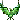
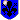

IL FERRO SPEZZATO - QUEST NECRO - La forgia e il golem
Superata la grata, il corridoio finalmente si apre… e il mondo davanti a voi cambia colore. Il bagliore arancione del metallo fuso invade lo spazio come un’alba innaturale. La Sala del Crogiolo è un enorme ventre di pietra e ferro, largo come una piazza e alto da far scomparire il soffitto tra fumo, scintille e vapore. Al centro, una siviera colossale - otto metri d’altezza, cinque di diametro - ribolle come un cuore malato. Il metallo liquido fuoriesce in un flusso interminabile, una colata argentata e infuocata che scvola nei canali incisi nel pavimento, larghi un metr e pulsanti di luce incandescente. Il ruggito costante del crogiolo domina l’aria; ogni tanto un’esplosione di vapore riecheggia tra le travi, mandando un brivido di calore lungo le pareti metalliche. Ci sono dei pentoloni posti su carrelli elevatori, lungo le pareti, seguono un tragitto lento e rituale: si riempiono, salgono al livello superiore, si svuotano, e ritornano giù, in un ciclo eterno di magia e meccanica. Un odore ferroso, misto a cenere e bruciato, vi impregna subito i polmoni. Ed è proprio attorno alla siviera che scorgete tre strutture diverse da tutto il resto: tre Totem di Controllo, simili a obelischi runici innestati nel meccanismo della forgia. Ognuno emana un’energia distinta, come se rappresentassero tre funzioni vitali dell’intera sala. La sala è divisa in tre quadranti, separati dal rigolo d'acciaio che scorre nell'incisione sul terreno fino ai grossi pentoloni. Ogni totem domina un settore. Su una piattaforma appena rialzata nel quadrante centrale c'è il primo totem: un enorme argano verticale è bloccato da una barra di metallo deformata dal calore. Cavi spessi entrano ed escono da ingranaggi enormi. Sul basamento dell’argano, inciso con caratteri spigolosi e anneriti dal calore, leggete: "SOLLEVA CIÒ CHE NEMMENO IL FUOCO PUÒ PIEGARE". Nel quadrante di destra invece, il secondo Totem è un un pannello pieno di leve, ruote e manomtri magici che sfrigola di energia blu. Ogni leva muove un segmento della forgia… e oscillazioni imprevedibili del crogiolo rispondono immediatamente anche ai più piccoli movimenti. Sul bordo superiore è incisa una scritta consumata dal tempo: "NON LA FORZA, MA LA MISURA PRESERVA IL FLUSSO" alcune lancette segnano dei valori scritti in elfico. A sinistra, su un piedistallo di roccia annerita, c'è il terzo totem. Su di esso un grande cristallo arancione appare semi-spento. L’energia al suo interno si muove lentamente, come una fiamma sul punto di morire. Attorno, rune circolari richiamano un meccanismo di attivazione mistico/magico, questo. Alla base del piedistallo, quasi come un monito: "SOLO UN CUORE ACCESO PUÒ DESTARE IL CUORE DELLA FORGIA" Il cristallo sembra reagire alla vostra presenza, ma solo debolmente, come se pretendesse qualcosa che voi ancora non avete dato.
TURNI LIBERI. Vi chiedo gentilmente se vi separate tra i totem di scrivere nel Tag su quale Totem assieme. Questa è un'azione d'arrivo, per permettervi eventualmente di dividervi. Poi i totem saranno spiegati meglio nella prossima azione.
21:07 FrancisLake // su quale totem siete
21:20 Euridas
Euridas  [Sala del Crogiolo - Verso terzo obelisco] [L'elfo avanza in testa al gruppo. Indossa l'armatura completa del Drago Nero, con elmo e guanti d'arme indossati. Sulla schiena un mantello nero come la notte piu' oscura. Quando entra nella sala del crogiolo, prova ad inspirare profondamente, ma e' costretto ad interrompere il flusso d'aria dato il calore ed odore. Uno sguardo ai tre totem, attento, cercando di carpire le scritte sull'argano, le scritte in elfico ancora distanti e la scritta consumata dal tempo.] "Dividiamoci." [Chiaro, il tono di voce grave. Solleva la mano sinistra verso il primo obelisco.] "Mihawk, Urwen." [Quindi solleva la mano destra indicando il terzo obelisco.] Dareh, con me. [Il passo vien portato quindi in direzione del terzo obelisco, quello con il cristallo arancione.]
[Sala del Crogiolo - Verso terzo obelisco] [L'elfo avanza in testa al gruppo. Indossa l'armatura completa del Drago Nero, con elmo e guanti d'arme indossati. Sulla schiena un mantello nero come la notte piu' oscura. Quando entra nella sala del crogiolo, prova ad inspirare profondamente, ma e' costretto ad interrompere il flusso d'aria dato il calore ed odore. Uno sguardo ai tre totem, attento, cercando di carpire le scritte sull'argano, le scritte in elfico ancora distanti e la scritta consumata dal tempo.] "Dividiamoci." [Chiaro, il tono di voce grave. Solleva la mano sinistra verso il primo obelisco.] "Mihawk, Urwen." [Quindi solleva la mano destra indicando il terzo obelisco.] Dareh, con me. [Il passo vien portato quindi in direzione del terzo obelisco, quello con il cristallo arancione.]
Euridas [Sala del Crogiolo - Verso terzo obelisco] [L'elfo avanza in testa al gruppo. Indossa l'armatura completa del Drago Nero, con elmo e guanti d'arme indossati. Sulla schiena un mantello nero come la notte piu' oscura. Quando entra nella sala del crogiolo, prova ad inspirare profondamente, ma e' costretto ad interrompere il flusso d'aria dato il calore ed odore. Uno sguardo ai tre totem, attento, cercando di carpire le scritte sull'argano, le scritte in elfico ancora distanti e la scritta consumata dal tempo.] "Dividiamoci." [Chiaro, il tono di voce grave. Solleva la mano sinistra verso il primo obelisco.] "Mihawk, Urwen." [Quindi solleva la mano destra indicando il terzo obelisco.] Dareh, con me. [Il passo vien portato quindi in direzione del terzo obelisco, quello con il cristallo arancione.]21:25 Euridas [Sala del Crogiolo - Verso terzo obelisco] la destra tiene la spada, Argon Dur..
21:28 Dareh [Sala del Crogiolo - Verso terzo obelisco] Nonostante la recente guarigione e le bende ancora sotto la corazza, segue Euridas senza esitazione. L’aria nella Sala del Crogiolo è quasi un’entità viva che brucia la gola al primo respiro. La luce arancione del crogiolo si riflette sulle placche della sua armatura, dipingendolo con bagliori di fuoco, come se il metallo stesso rispondesse al richiamo del magma. Ogni passo risuona nel grande ventre della forgia, scandito da un ritmo antico di guerra e fatica. Il clangore del metallo e il rombo del crogiolo vibrano nel suo petto, mentre attraversano il settore centrale della forgia, attenti a non oltrepassare i canali incandescenti che serpeggiano nel pavimento. La mano sinistra si posa sull'elsa della spada, l’altra, fasciata e dolorante, sfiora il metallo caldo della sua cintura, come a ricordargli che anche ciò che è spezzato può tornare a essere forza. Ogni passo è un patto silenzioso con sé stesso e con il Drago Nero.
21:28 SiannaLeFair
SiannaLeFair  [Sala del Crogiolo - Secondo totem] Hai inviato La cappa color terra le scivola sulle spalle, il cuoio scuro della casacca che segue le forme esili. Gli stivali stringati, le dita sono ricoperte da guanti. I monili nascosti tintinnano piano sotto i lembi del mantello, un suono quasi impercettibile che vibra all’unisono con i glifi incisi sulla pelle. Legato alla cintura, una piccola scarsella che contiene alcune ampolle. Avanza nel ventre metallico del crogiolo, il calore della forgia che le sfiora la pelle. L’odore di ferro le pizzica le narici, familiare e sgradito insieme, mentre i totem di controllo troneggiano davanti a loro. Le sue pupille nere si stringono, La mano guantata accenna un gesto verso Izayoi:. “Sorella… venite. Qui parlano nella vostra lingua, accorrete”.
[Sala del Crogiolo - Secondo totem] Hai inviato La cappa color terra le scivola sulle spalle, il cuoio scuro della casacca che segue le forme esili. Gli stivali stringati, le dita sono ricoperte da guanti. I monili nascosti tintinnano piano sotto i lembi del mantello, un suono quasi impercettibile che vibra all’unisono con i glifi incisi sulla pelle. Legato alla cintura, una piccola scarsella che contiene alcune ampolle. Avanza nel ventre metallico del crogiolo, il calore della forgia che le sfiora la pelle. L’odore di ferro le pizzica le narici, familiare e sgradito insieme, mentre i totem di controllo troneggiano davanti a loro. Le sue pupille nere si stringono, La mano guantata accenna un gesto verso Izayoi:. “Sorella… venite. Qui parlano nella vostra lingua, accorrete”.
SiannaLeFair [Sala del Crogiolo - Secondo totem] Hai inviato La cappa color terra le scivola sulle spalle, il cuoio scuro della casacca che segue le forme esili. Gli stivali stringati, le dita sono ricoperte da guanti. I monili nascosti tintinnano piano sotto i lembi del mantello, un suono quasi impercettibile che vibra all’unisono con i glifi incisi sulla pelle. Legato alla cintura, una piccola scarsella che contiene alcune ampolle. Avanza nel ventre metallico del crogiolo, il calore della forgia che le sfiora la pelle. L’odore di ferro le pizzica le narici, familiare e sgradito insieme, mentre i totem di controllo troneggiano davanti a loro. Le sue pupille nere si stringono, La mano guantata accenna un gesto verso Izayoi:. “Sorella… venite. Qui parlano nella vostra lingua, accorrete”.21:31 Urwen [Sala del Crogiolo - Verso Primo Obelisco] Le ferite ed i sei buchi lasciategli dal serpente sono state completamente risanata e Urwen una volta sentite le parole del Drago Nero vi annuisce tacitamente, andando ad affiancarsi a Mihwak, l’elfa è vestita completamente dell’armatura dell’Armata dei Draghi, corazza a placche che reca effigi e grado dell’armata, pantaloni neri bucati all’altezza della coscia destra, Fauci sguainata e tenuta saldamente nella mano destra, mani guantate ed elmo in testa che mette in mostra le orecchie a punta, qualche anello alle dita ed un ciondolo sotto la corazza, un pugnale all’interno dello stivale destro. E quando si avvia verso la Sala del Crogiolo vien colta da un’ondata di calore e di odore particolarmente strano, tatto ed olfatto messi all’erta, così come vista ed udito, e di tutto silenzio la paladina tenta di avviarsi verso il primo Obelisco, tentando un respiro, quel che basta a sopportare l’aria e l’accesso in quella stanza.
21:33 Izayoi
Izayoi
Izayoi 
[Sala Crogiolo - Secondo Totem] [Si trova accanto a Sianna, a muovere alle sue parole, il suo corpo è ancora rivestito dagli abiti che aveva in precedenza: una maglia nera a collo alto e maniche lunghe che sembra adeguarsi alle sue forme e un paio di pantaloni in pelle nera, attillati. Un mantello nero copre le sue esili spalle, sui fianchi una cintura in cuoio nero contenente diverse scarselle con i componenti degli incantesimi e diversi alloggiamenti per le pozioni che ha con sé. Appeso alla cintura, anche il fodero in cui giace il pugnale d’oro. I lunghi capelli neri sono stati nuovamente legati in una lunga treccia stretta e poi raccolta sulla nuca in uno chignon. Al collo v’è Destino, il ciondolo di rubino e le dita, coperte da guanti neri, nascondono l’anello della setta e l’anello di diamante, oltre a un terzo di ben più scarsa qualità. Gli occhi dell’elfa si posano sulla forgia, l’attenzione su di essa e sui tre totem, il suo passo che si muove per raggiungere il secondo di essi.] Probabilmente non cambierà nulla [Mormora] Ma ho qualche dubbio in merito a queste suddivisioni. [La fronte si corruga] È possibile che sia solo una mia paranoia, ma le scritte potrebbero avere un significato, oltre a farci comprendere cosa regola ciascun totem. [Indica gli elevatori] Il primo sembra controllare quelli… [una pausa] il secondo sembra regolare i flussi di metallo. Il terzo, invece, sembra il nucleo che alimenta la forgia… che è di natura mistica. Se così fosse [osserva Dareh, poi Euridas] Sianna potrebbe essere molto più utile di voi in quel frangente. [Una pausa] Ma sono d’accordo che la mia presenza possa essere più indicata qui. [Ed è su quelle scritte che, invero, andrebbe a posare le iridi] Più che altro, però, mi domando… che cosa vogliamo ottenere qua?21:34 Mihawk [Sala del Crogiolo - QUADRANTE CENTRALE] cammina lentamente, il suono dei passi che riecheggia nella stanza in un ritmo che sa di condanna. E’ poco dietro a tutti, a una distanza che è insieme prudenza e calcolo. La luce arancione del metallo fuso scivola sull’ armatura nera che veste, rivelando ogni piccola imperfezione delle placche centrali: il metallo, riparato poco prima a suon di martellate, mostra ancora disallineature, come cicatrici fresche sul petto. Le rune cremisi che percorrono spalle, braccia e le piastre centrali pulsano lievemente a ogni folata di calore, come se reagissero all’ ambiente. Nessun mantello e nessun elmo si frappone tra lui e il ruggito della forgia. La testa è libera, i capelli neri mossi dal calore che sale in spirali dal pavimento. Gli occhi rossi riflettono ogni colata di luce come due schegge di rubino. Sulla schiena, fissata diagonalmente, la spada sporge oltre la spalla sinistra. Osserva la scena, alternandosi tra i tre totem, come chi riconosce un ostacolo da superare. Li studia, l’argano bloccato, il pannello sfrigolante di energia blu e il cristallo arancione morente. Poi, a seguito delle parole del Drago Nero, si avvicina al primo obelisco nel quadrante centrale.
[TOTEM 1] Davanti a voi, troneggia un enorme argano. Una barra di metallo, contorta dal calore, ne blocca il movimento. Avvicinandovi, sentite l’odore acre dell’olio rancido e il cigolio lento degli ingranaggi che cercano di girare… ma non possono. La barra deformata poggia su un punto preciso della struttura: sembra più debole, come se anni di calore l’avessero assottigliata. In un angolo, mezzi sepolti dalla polvere, vedete leve, aste, pezzi di legno e vecchie catene: strumenti che potrebbero servire da leva o contrappeso. Mentre vi avvicinate, una folata di calore investe la stanza e fa oscillare l’argano. Il metallo scricchiola, quasi a suggerire che non basta la forza bruta… ma una forza applicata nel modo giusto. [TOTEM 2] Davanti a voi si apre un pannello pieno di leve, ruote dentate, indicatori e manometri. Tre lancette oscillano lentamente da sinistra a destra. Ogni movimento produce un suono secco: tic… tic… tic. Un soffio di vapore caldo esce da una valvola alla vostra sinistra, mentre un’altra si riempie di condensa glaciale. È evidente che qualsiasi gesto brusco rischia di far saltare tutto. Un orecchio attento percepisce un ritmo preciso: un sibilo lungo, un gorgoglio, poi un clic metallico. Sembra quasi indicare… un ordine, un tempo da seguire. Toccando le pareti del pannello, sentite che alcune zone sono più calde, altre più fredde: calore e rumore cambiano insieme, come se il sistema comunicasse quale leva andrebbe alzata e quale abbassata. Le lancette vibrano ogni volta che vi avvicinate alla posizione giusta. [TOTEM 3] Davanti a voi si erge un cristallo enorme, semi-opaco, come se fosse addormentato. All’interno, una luce rossastra pulsa debolmente: un battito lento… quasi un cuore ferito. Ogni pulsazione è più fioca della precedente. Quando gli passate accanto, il cristallo reagisce: una lieve vibrazione, un ronzio, un riflesso di luce. Non è un oggetto inerte: risponde all’energia, a prescindere da quale forma prenda. Se gli avvicinate una fiamma, il battito accelera. Se gli lanciate una scintilla magica, la superficie trema. Se gli parlate, o concentrate la vostra volontà, la luce sembra ascoltare… come se stesse cercando qualcosa da cui trarre forza. Vuole essere colpito, alimentato o ispirato… non importa come, purché l’energia sia vostra.
TURNI LIBERI. Scrivete gentilmente [Totem 1 - 2 - 3] Così è più chiaro per me gentilmente
Euridas ti sussurra: //Aspetto te per scrivere io
SiannaLeFair sussurra a Euridas: /tg
21:56SiannaLeFair [Sala del Crogiolo - terzo totem] “Sorella” verso Izayoi qui servo a poco” mormora la faerica, sfiorando con la punta delle dita le incisioni in elfico “lo percepisco, come percepisco che questo ticchettio invoca mani nate per l’ingranaggio e il ferro”. Si sposta verso il terzo totem, la cappa che scivola appena sulle spalle mentre richiama il Flagello con un cenno deciso. “Dareh, Andate. La mia fenice vi attende, mettete la vostra esperienza al servizio del suo sguardo”. Poi si volta verso Euridas, gli occhi neri che brillano. La scintilla che danza nel cuore del crogiolo vibra anche in lei. “La vedi, vero? La senti comela sento io?”. Un passo verso di lui, la voce più bassa: “Ti fidi di me? Toccala ma prima” prende la mano di Euridas sfila uno dei guanti e afferendo un dito lo morde forte e in profondità fino a farlo sanguinare. “Toccalo ora”.
SiannaLeFair [Sala del Crogiolo - terzo totem] “Sorella” verso Izayoi qui servo a poco” mormora la faerica, sfiorando con la punta delle dita le incisioni in elfico “lo percepisco, come percepisco che questo ticchettio invoca mani nate per l’ingranaggio e il ferro”. Si sposta verso il terzo totem, la cappa che scivola appena sulle spalle mentre richiama il Flagello con un cenno deciso. “Dareh, Andate. La mia fenice vi attende, mettete la vostra esperienza al servizio del suo sguardo”. Poi si volta verso Euridas, gli occhi neri che brillano. La scintilla che danza nel cuore del crogiolo vibra anche in lei. “La vedi, vero? La senti comela sento io?”. Un passo verso di lui, la voce più bassa: “Ti fidi di me? Toccala ma prima” prende la mano di Euridas sfila uno dei guanti e afferendo un dito lo morde forte e in profondità fino a farlo sanguinare. “Toccalo ora”.22:02Euridas [Sala del Crogiolo - Totem 3] [Vede Sianna avvicinarsi e compie un cenno del capo verso Dareh, a confermare cio' che ha detto la Banshee. Quando lei si avvicina la segue con lo sguardo Quando gli sfila il guanto, la lascia fare. Si guarda la mano, voltandosi poi verso quel cristallo, verso quella luce.] Tu mi leggi nel pensiero. E' cio' che avrei fatto io stesso.[Sussurra verso l'amata, tornando con lo sguardo verso quel cristallo luminoso.. Quindi la mano sinistra, quella che non tiene l'arma, con l'intero palmo, va a toccare quella luce con decisione ma delicatezza al contempo.]
Euridas [Sala del Crogiolo - Totem 3] [Vede Sianna avvicinarsi e compie un cenno del capo verso Dareh, a confermare cio' che ha detto la Banshee. Quando lei si avvicina la segue con lo sguardo Quando gli sfila il guanto, la lascia fare. Si guarda la mano, voltandosi poi verso quel cristallo, verso quella luce.] Tu mi leggi nel pensiero. E' cio' che avrei fatto io stesso.[Sussurra verso l'amata, tornando con lo sguardo verso quel cristallo luminoso.. Quindi la mano sinistra, quella che non tiene l'arma, con l'intero palmo, va a toccare quella luce con decisione ma delicatezza al contempo.]22:06 Dareh
Dareh  [Sala Crogiolo - Secondo Totem] Indugia un momento, poi si volta e si muove senza ulteriori parole verso il secondo totem. Raggiunge Izayoi mentre la voce dell’elfa sibila tra analisi e sospetto, le sue iridi che scorrono da una leva all’altra, come a cercare un ritmo nascosto tra gli ingranaggi. La sua mano fasciata sfiora la superficie metallica, sentendone il calore graduale, mentre la sinistra si posa su una delle leve, senza premere. «Una forgia non si ferma, non senza conseguenze. Se questo luogo è in stallo, allora qualcuno vuole che lo resti... o che esploda.» Si piega in avanti, avvicinando l’orecchio ai sussurri meccanici: tic... tic... tic… Un ritmo. Uno schema. Gli occhi si stringono. «Il messaggio inciso è chiaro: misura. I flussi devono essere ripristinati. Tu hai orecchio per questo. Io ho una mano che può fermare ciò che non deve muoversi.» Si volta poi di nuovo verso il totem, le leve e i manometri vibranti di energia instabile.
[Sala Crogiolo - Secondo Totem] Indugia un momento, poi si volta e si muove senza ulteriori parole verso il secondo totem. Raggiunge Izayoi mentre la voce dell’elfa sibila tra analisi e sospetto, le sue iridi che scorrono da una leva all’altra, come a cercare un ritmo nascosto tra gli ingranaggi. La sua mano fasciata sfiora la superficie metallica, sentendone il calore graduale, mentre la sinistra si posa su una delle leve, senza premere. «Una forgia non si ferma, non senza conseguenze. Se questo luogo è in stallo, allora qualcuno vuole che lo resti... o che esploda.» Si piega in avanti, avvicinando l’orecchio ai sussurri meccanici: tic... tic... tic… Un ritmo. Uno schema. Gli occhi si stringono. «Il messaggio inciso è chiaro: misura. I flussi devono essere ripristinati. Tu hai orecchio per questo. Io ho una mano che può fermare ciò che non deve muoversi.» Si volta poi di nuovo verso il totem, le leve e i manometri vibranti di energia instabile.
Dareh [Sala Crogiolo - Secondo Totem] Indugia un momento, poi si volta e si muove senza ulteriori parole verso il secondo totem. Raggiunge Izayoi mentre la voce dell’elfa sibila tra analisi e sospetto, le sue iridi che scorrono da una leva all’altra, come a cercare un ritmo nascosto tra gli ingranaggi. La sua mano fasciata sfiora la superficie metallica, sentendone il calore graduale, mentre la sinistra si posa su una delle leve, senza premere. «Una forgia non si ferma, non senza conseguenze. Se questo luogo è in stallo, allora qualcuno vuole che lo resti... o che esploda.» Si piega in avanti, avvicinando l’orecchio ai sussurri meccanici: tic... tic... tic… Un ritmo. Uno schema. Gli occhi si stringono. «Il messaggio inciso è chiaro: misura. I flussi devono essere ripristinati. Tu hai orecchio per questo. Io ho una mano che può fermare ciò che non deve muoversi.» Si volta poi di nuovo verso il totem, le leve e i manometri vibranti di energia instabile.22:12Izayoi [Totem 2] [Uno sguardo a Sianna, un cenno di assenso] Sono d’accordo… [Sussurra, ma sembra distratta verso di lei. Gli occhi dell’elfa si soffermano sul pannello contenente leve, indicatori e manometri. Osserva le tre lancette che oscillano, e come esse oscillano, una ruga leggera tra le sopracciglia mentre cerca di aprire i sensi e andrebbe a leggere quelli che sono le informazioni in lingua elfica che trova. Il caldo e il freddo che si alternano, i ticchettii che sembrano indicare un tempo preciso. Sibilo, gorgoglio, clic metallico. Rimane in silenzio, gli occhi chiusi per un attimo mentre cerca di percepire il ciclo di rumori con assoluta precisione, come se cercasse di entrare in esso come nel ritmo di una sinfonia. Cerca anche di comprendere se il suono sia correlato a una qualche leva, senza ancora sfiorarle ma cercando, con estrema delicatezza, di comprendere la correlazione tra le leve, il rumore e il calore, anche sfiorando con delicatezza le pareti del pannello, sperando le diano indicazioni in proposito. Quando osserva Dareh avvicinarsi i suoi occhi scivolano per un attimo su di lui] Sì, sono d’accordo con la vostra intuizione. Ecco a cosa si riferivano, quando parlavano del rogo. Per il momento, però, limitiamoci a ragionare e a capire senza toccare nulla. [E la voce esce in un sussurro, la mano che si appoggia su una delle aree fredde, osservando le lancette come si muovono e se si adattano] Sì, penso anch’io che il fulcro sia collegare il movimento delle leve con il suono… utilizzare il ritmo che questo ci offre per regolarizzare i flussi, ma dobbiamo capire quali leve utilizzare in quale momento, per evitare che tutto salti in aria.
Izayoi [Totem 2] [Uno sguardo a Sianna, un cenno di assenso] Sono d’accordo… [Sussurra, ma sembra distratta verso di lei. Gli occhi dell’elfa si soffermano sul pannello contenente leve, indicatori e manometri. Osserva le tre lancette che oscillano, e come esse oscillano, una ruga leggera tra le sopracciglia mentre cerca di aprire i sensi e andrebbe a leggere quelli che sono le informazioni in lingua elfica che trova. Il caldo e il freddo che si alternano, i ticchettii che sembrano indicare un tempo preciso. Sibilo, gorgoglio, clic metallico. Rimane in silenzio, gli occhi chiusi per un attimo mentre cerca di percepire il ciclo di rumori con assoluta precisione, come se cercasse di entrare in esso come nel ritmo di una sinfonia. Cerca anche di comprendere se il suono sia correlato a una qualche leva, senza ancora sfiorarle ma cercando, con estrema delicatezza, di comprendere la correlazione tra le leve, il rumore e il calore, anche sfiorando con delicatezza le pareti del pannello, sperando le diano indicazioni in proposito. Quando osserva Dareh avvicinarsi i suoi occhi scivolano per un attimo su di lui] Sì, sono d’accordo con la vostra intuizione. Ecco a cosa si riferivano, quando parlavano del rogo. Per il momento, però, limitiamoci a ragionare e a capire senza toccare nulla. [E la voce esce in un sussurro, la mano che si appoggia su una delle aree fredde, osservando le lancette come si muovono e se si adattano] Sì, penso anch’io che il fulcro sia collegare il movimento delle leve con il suono… utilizzare il ritmo che questo ci offre per regolarizzare i flussi, ma dobbiamo capire quali leve utilizzare in quale momento, per evitare che tutto salti in aria. 22:12Mihawk  [Sala del Crogiolo - Totem 1] [ Mentre analizza gli ingranaggi il volto viene illuminato dai bagliori arancioni dell’ acciaio fuso. Resta eretto, in tutta la sua considerevole altezza: 185 cm, come una statua in armatura, mentre il calore batte contro il viso scoperto e fa vibrare lievemente le rune cremisi sulle piastre. L’argano geme. La barra contorta pulsa come un osso rotto che non vuole spezzarsi. ] Solleva ciò che nemmeno il fuoco può piegare. [ ripete, con tono neutro, quasi spento, privo di emozioni. Non è un invito alla forza bruta, ma alla forza giusta. Mentre guarda la barra deformata, il metallo sembra quasi respirare sotto l’effetto del calore, rivelando una sezione più sottile, un punto di cedimento. Poi reclina la testa a destra, verso quel cumulo di materiale abbandonato. Inizialmente sembra attirato dalle catene, come se fosse un segno del Primo. ] Potrebbero essere arrugginite. [ socchiude gli occhi e inspira profondamente, un attimo di pausa, evidente che sia pensieroso. ] Urwen. Prendete le catene e agganciatele all’ argano. Qualora si muovesse di nuovo, usate il vostro peso per farlo oscillare nel verso giusto, mentre io tento di allentare la barra. [ detto questo, si china un poco per prendere un asta impolverata. ]
[Sala del Crogiolo - Totem 1] [ Mentre analizza gli ingranaggi il volto viene illuminato dai bagliori arancioni dell’ acciaio fuso. Resta eretto, in tutta la sua considerevole altezza: 185 cm, come una statua in armatura, mentre il calore batte contro il viso scoperto e fa vibrare lievemente le rune cremisi sulle piastre. L’argano geme. La barra contorta pulsa come un osso rotto che non vuole spezzarsi. ] Solleva ciò che nemmeno il fuoco può piegare. [ ripete, con tono neutro, quasi spento, privo di emozioni. Non è un invito alla forza bruta, ma alla forza giusta. Mentre guarda la barra deformata, il metallo sembra quasi respirare sotto l’effetto del calore, rivelando una sezione più sottile, un punto di cedimento. Poi reclina la testa a destra, verso quel cumulo di materiale abbandonato. Inizialmente sembra attirato dalle catene, come se fosse un segno del Primo. ] Potrebbero essere arrugginite. [ socchiude gli occhi e inspira profondamente, un attimo di pausa, evidente che sia pensieroso. ] Urwen. Prendete le catene e agganciatele all’ argano. Qualora si muovesse di nuovo, usate il vostro peso per farlo oscillare nel verso giusto, mentre io tento di allentare la barra. [ detto questo, si china un poco per prendere un asta impolverata. ]
Mihawk [Sala del Crogiolo - Totem 1] [ Mentre analizza gli ingranaggi il volto viene illuminato dai bagliori arancioni dell’ acciaio fuso. Resta eretto, in tutta la sua considerevole altezza: 185 cm, come una statua in armatura, mentre il calore batte contro il viso scoperto e fa vibrare lievemente le rune cremisi sulle piastre. L’argano geme. La barra contorta pulsa come un osso rotto che non vuole spezzarsi. ] Solleva ciò che nemmeno il fuoco può piegare. [ ripete, con tono neutro, quasi spento, privo di emozioni. Non è un invito alla forza bruta, ma alla forza giusta. Mentre guarda la barra deformata, il metallo sembra quasi respirare sotto l’effetto del calore, rivelando una sezione più sottile, un punto di cedimento. Poi reclina la testa a destra, verso quel cumulo di materiale abbandonato. Inizialmente sembra attirato dalle catene, come se fosse un segno del Primo. ] Potrebbero essere arrugginite. [ socchiude gli occhi e inspira profondamente, un attimo di pausa, evidente che sia pensieroso. ] Urwen. Prendete le catene e agganciatele all’ argano. Qualora si muovesse di nuovo, usate il vostro peso per farlo oscillare nel verso giusto, mentre io tento di allentare la barra. [ detto questo, si china un poco per prendere un asta impolverata. ]22:14Urwen [Sala del Crogiolo - TOTEM 1 ] [lo sguardo completamente accigliato a vedere interamente e rapidamente la Sala del Crogiolo, che mentre si avvicina al TOTEM 1, investita nuovamente da quell’ondata di calore, il respiro viene trattenuto ha un fremito la paladina in contemporanea al fatto che le si muovono le orecchie a punta in virtù dei piccoli rumori che sembrerebbe sentire, gli occhi neri come la pece a fissare la scritta, e quando cercherebbe di portarsi al fianco di Mihawk prova a parlare, e lo fa con evidente fatica] Solleva ciò che nemmeno il fuoco può piegare…[sente odore acre di olio e il rumorio degli ingranaggi che non riescono a girare, ed a un certo punto scorge leve, aste, pezzi di legno e vecchie catene lì vicino, in un angolo, che indica con un cenno del capo] Ci serve quella! [e sente lo scricchiolare del metallo, si avvia rapida a quell’angolo in un mero tentativo di recuperare la catena, una volta sentito la Fenice.] Molto molto lentamente…[lascia cadere le parole, riferendosi in particolar modo allo stato del Totem 1]
Urwen [Sala del Crogiolo - TOTEM 1 ] [lo sguardo completamente accigliato a vedere interamente e rapidamente la Sala del Crogiolo, che mentre si avvicina al TOTEM 1, investita nuovamente da quell’ondata di calore, il respiro viene trattenuto ha un fremito la paladina in contemporanea al fatto che le si muovono le orecchie a punta in virtù dei piccoli rumori che sembrerebbe sentire, gli occhi neri come la pece a fissare la scritta, e quando cercherebbe di portarsi al fianco di Mihawk prova a parlare, e lo fa con evidente fatica] Solleva ciò che nemmeno il fuoco può piegare…[sente odore acre di olio e il rumorio degli ingranaggi che non riescono a girare, ed a un certo punto scorge leve, aste, pezzi di legno e vecchie catene lì vicino, in un angolo, che indica con un cenno del capo] Ci serve quella! [e sente lo scricchiolare del metallo, si avvia rapida a quell’angolo in un mero tentativo di recuperare la catena, una volta sentito la Fenice.] Molto molto lentamente…[lascia cadere le parole, riferendosi in particolar modo allo stato del Totem 1][TOTEM1] Mihawk e Urwen si muovono come due parti dello stesso ingranaggio: la determinazione muta del Profano e l’allerta sottile della paladina. Quando Urwen afferra le catene, queste tintinnano con un suono metallico diverso, più… pieno. Non è semplice ferro: sembra temperato, come se fosse l’unico materiale qui dentro non deformato dal calore. Mentre Mihawk solleva l’asta polverosa, l’argano vibra. Poi accade qualcosa. La luce arancione della siviera riflette sul punto più sottile della barra. Per un istante — un battito di ciglia — il metallo mostra una crepa microscopica, un filo d’ombra che scorre lungo la superficie arroventata. È lì. Il punto cedevole. Il punto che “nemmeno il fuoco può piegare”… ma che può essere spezzato, sollevato, storto, se la leva e la catena lavorano insieme. [TOTEM2] Izayoi e Dareh, immersi nel ritmo dei rumori, sentono il totem reagire al loro ascolto. È quasi impercettibile… quasi. Quando Izayoi sfiora una delle superfici fredde, la lancetta superiore rallenta la propria oscillazione. Quando Dareh si avvicina alla leva centrale, un clic metallico vibra nelle pareti. È come se il pannello stesse insegnando loro come respirare con il Crogiolo. All’improvviso, uno dei manometri emette un soffio di condensazione più forte. Sul vetro compare, per mezzo secondo, una scritta in elfico antico: “TRE SEGUONO L’UNO.” Le tre lancette oscillano di nuovo: non tutte insieme. Una… Poi due, insieme… Poi tutte e tre. Sibilo. Gorgoglio. Clic. È una sequenza. Una danza. Un ritmo da seguire con le leve, non contro di esse. [TOTEM3] Sianna prende la mano di Euridas, la morde, e il Drago Nero fa scendere il sangue sulla superficie del cristallo. Il contatto è immediato. Il cristallo esplode in un raggio rosso vivo che sale lungo le venature interne. La luce pulsa, forte, evocando un battito accelerato… che entra in risonanza con il respiro di entrambi. Un rombo profondo corre nel pavimento. Il Crogiolo risponde. La luce del totem cresce… e poi… si ferma. Non si spegne. Non regredisce. Semplicemente… rimane in attesa. La superficie del cristallo ora non è più opaca: è viva, ma incompleta. Una seconda incisione si illumina, appena visibile sotto la prima: "FIAMMA DI SANGUE… E FIAMMA D’ANIMO." Il sangue ha risvegliato il cuore. Serve altro. La luce vibra in direzione di Sianna, come se riconoscesse in lei qualcosa: la fenice, la scintilla, il fuoco che non è soltanto fiamma fisica… ma essenza, incanto, volontà.
TURNI LIBERI
22:37Euridas [Sala del Crogiolo - Totem 3] Fiamma di sangue...[lo sguardo e' fisso sulla scritta, prima che l'elfo torni a guardare la sua Dea]...e fiamma d'animo. [Tenta di prendere la mano di lei per porla sul proprio petto, all'altezza del cuore.] Metti il mio guardo a terra. Tocca il cristallo, maelamin. [sussurra, con lo sguardo fisso su di lei. Non c'e' esitazione nei suoi movimenti, non c'e' titubanza nel suo dire, che sia quella la risposta oppure no.]
Euridas [Sala del Crogiolo - Totem 3] Fiamma di sangue...[lo sguardo e' fisso sulla scritta, prima che l'elfo torni a guardare la sua Dea]...e fiamma d'animo. [Tenta di prendere la mano di lei per porla sul proprio petto, all'altezza del cuore.] Metti il mio guardo a terra. Tocca il cristallo, maelamin. [sussurra, con lo sguardo fisso su di lei. Non c'e' esitazione nei suoi movimenti, non c'e' titubanza nel suo dire, che sia quella la risposta oppure no.]22:39SiannaLeFair [Sala del Crogiolo - terzo totem] Fissa il cristallo mentre il sangue del suo amato sembra far risvegliare il cristallo. La banshee pone la sua mano sinistra su quella dell’elfo, come volendo unire non solo le loro anime ma anche i loro cuori. Le sue pupille si restringono, attente al ritmo nascente, al pulsare che sembra imitare un cuore appena sveglio. La fata solleva l’altra mano richiamando l’ars e sottili spirali opalescenti avvolgono le sue dita, arrotolandosi ai polsi, trasformandosi lentamente in riverberi dorati. “Mia Signora” sussurra “a tua luce io invoco, il tuo fuoco sacro io richiamo”. Indirizzando quella invocazione sul cristallo. “Non per distruggere ma per irrorare, per innescare la scintilla se questo è il tuo volere Madre”. E dalla mano destra, come un filo opalescente, ella cercherà di infondere un raggio puro che cerca la superficie del cristallo, tentando di imprimere la sua essenza spirituale. (Freccia spirituale SPIRITO 8 )
SiannaLeFair [Sala del Crogiolo - terzo totem] Fissa il cristallo mentre il sangue del suo amato sembra far risvegliare il cristallo. La banshee pone la sua mano sinistra su quella dell’elfo, come volendo unire non solo le loro anime ma anche i loro cuori. Le sue pupille si restringono, attente al ritmo nascente, al pulsare che sembra imitare un cuore appena sveglio. La fata solleva l’altra mano richiamando l’ars e sottili spirali opalescenti avvolgono le sue dita, arrotolandosi ai polsi, trasformandosi lentamente in riverberi dorati. “Mia Signora” sussurra “a tua luce io invoco, il tuo fuoco sacro io richiamo”. Indirizzando quella invocazione sul cristallo. “Non per distruggere ma per irrorare, per innescare la scintilla se questo è il tuo volere Madre”. E dalla mano destra, come un filo opalescente, ella cercherà di infondere un raggio puro che cerca la superficie del cristallo, tentando di imprimere la sua essenza spirituale. (Freccia spirituale SPIRITO 8 )22:40Dareh [Sala Crogiolo - Secondo Totem] Il respiro del Crogiolo gli entra nella pelle. Non in forma di aria ma di ritmo, di pressione invisibile che pulsa come un cuore fatto di ferro. Resta immobile un istante: la voce di Izayoi scivola nell’aria, sussurrata, precisa, mentre lui osserva lo specchio opaco di un manometro, su cui una scritta antica si accende e si spegne come un occhio che strizza la palpebra. Non ne comprende le parole. Si concentra sul suono. La mano avvolta dalle bende si solleva, non per premere, non per spingere, ma per sentire. La superficie del pannello ha un suono anche lei, un vibrare sottile che cambia tra ferro arroventato e ferro gelido. Il suo pollice, sulla leva centrale, non stringe: ascolta. Le lancette oscillano esattamente così. Non vanno spinte tutte insieme, non vanno forzate: vanno seguite. Come una marea, una danza, un respiro meccanico che si ripete. Sempre uguale. Ma sempre vivo. «Devono respirare insieme. Non imporre il movimento.» La sua voce è bassa, graffiata, una confidenza, più che un’istruzione. Attende il gorgoglio. Lo sente arrivare prima che accada. È la pressione che sale nei canali, è la vibrazione che passa dalle bende alla carne. Poi, con un gesto quasi impercettibile, inclina la leva di sinistra, solo di qualche grado, come una prova, un battito di ciglia nella meccanica. Il clic segue subito dopo. La seconda lancetta si allunga verso un nuovo punto. Ora si volta, e guarda Izayoi. Non come un soldato che aspetta un ordine, né come un compagno che cerca risposta. Ma come chi ha capito la natura di quella macchina, non tanto da dominarla, quanto da lasciarla respirare. «Conta. Non guardare.» Un passo indietro. «Il crogiolo non si piega. Lo si accompagna.»
Dareh [Sala Crogiolo - Secondo Totem] Il respiro del Crogiolo gli entra nella pelle. Non in forma di aria ma di ritmo, di pressione invisibile che pulsa come un cuore fatto di ferro. Resta immobile un istante: la voce di Izayoi scivola nell’aria, sussurrata, precisa, mentre lui osserva lo specchio opaco di un manometro, su cui una scritta antica si accende e si spegne come un occhio che strizza la palpebra. Non ne comprende le parole. Si concentra sul suono. La mano avvolta dalle bende si solleva, non per premere, non per spingere, ma per sentire. La superficie del pannello ha un suono anche lei, un vibrare sottile che cambia tra ferro arroventato e ferro gelido. Il suo pollice, sulla leva centrale, non stringe: ascolta. Le lancette oscillano esattamente così. Non vanno spinte tutte insieme, non vanno forzate: vanno seguite. Come una marea, una danza, un respiro meccanico che si ripete. Sempre uguale. Ma sempre vivo. «Devono respirare insieme. Non imporre il movimento.» La sua voce è bassa, graffiata, una confidenza, più che un’istruzione. Attende il gorgoglio. Lo sente arrivare prima che accada. È la pressione che sale nei canali, è la vibrazione che passa dalle bende alla carne. Poi, con un gesto quasi impercettibile, inclina la leva di sinistra, solo di qualche grado, come una prova, un battito di ciglia nella meccanica. Il clic segue subito dopo. La seconda lancetta si allunga verso un nuovo punto. Ora si volta, e guarda Izayoi. Non come un soldato che aspetta un ordine, né come un compagno che cerca risposta. Ma come chi ha capito la natura di quella macchina, non tanto da dominarla, quanto da lasciarla respirare. «Conta. Non guardare.» Un passo indietro. «Il crogiolo non si piega. Lo si accompagna.»SiannaLeFair sussurra a FrancisLake: /la mano sx sul cuore dell'elfo :-(
22:44Izayoi [Totem 2] [Ancora concentrata su quella nenia che scandisce il ritmo, suoni e pause che si susseguono, note dissonanti di una sinfonia oscura. Osserva il movimento delle lancette, come il suo calore le rallenta, e osserva la scritta] Tre seguono l’uno [Mormora e traduce al contempo a Dareh, gli occhi smeraldo si riversano in lui, la fronte si corruga appena alle sue parole] Sono d’accordo. Se può tornarti dovremo collaborare. Al sibilo muoverò io la leva corrispondente a questa lancetta [indica la prima] al gorgoglio le due legate a questa seconda lancetta, una io e una tu, al clic io premerò la prima, tu le altre due. Gli occhi in lui, va bene? [Gli domanda, inspirando profondamente.] Aspettiamo ricominci il ciclo. [Decreta poi, e attenderebbe che fosse pronto, prima di attuare quanto decretato. Al sibilo una leva, al gorgoglio una lei e una lui, al clic le tre leve, in contemporanea, seguendo il ritmo e con delicatezza nel tocco]
Izayoi [Totem 2] [Ancora concentrata su quella nenia che scandisce il ritmo, suoni e pause che si susseguono, note dissonanti di una sinfonia oscura. Osserva il movimento delle lancette, come il suo calore le rallenta, e osserva la scritta] Tre seguono l’uno [Mormora e traduce al contempo a Dareh, gli occhi smeraldo si riversano in lui, la fronte si corruga appena alle sue parole] Sono d’accordo. Se può tornarti dovremo collaborare. Al sibilo muoverò io la leva corrispondente a questa lancetta [indica la prima] al gorgoglio le due legate a questa seconda lancetta, una io e una tu, al clic io premerò la prima, tu le altre due. Gli occhi in lui, va bene? [Gli domanda, inspirando profondamente.] Aspettiamo ricominci il ciclo. [Decreta poi, e attenderebbe che fosse pronto, prima di attuare quanto decretato. Al sibilo una leva, al gorgoglio una lei e una lui, al clic le tre leve, in contemporanea, seguendo il ritmo e con delicatezza nel tocco] 22:47Urwen [Sala del Crogiolo - TOTEM 1 ] [appena si avvicina a quel miscuglio di attrezzi abbandonati l’elfa flette busto e gambe quanto basta perché prima di recuperare la catena, visto il calore padrone all’interno della stanza, cercherebbe di tastarne la temperatura con l’ausilio dell’indice della mancina, trae sollievo e quando la recupera sente quel suono metallico pieno, le orecchie a punta vibrano ancora, un fremito le balza lungo la schiena, alla vista dell’elfa il ferro di queste è molto temprato] Sia la cosa buona che prendo! [mormora sommessamente come se parlasse proprio alle catene, senza perder tempo prova ad avvicinarsi alla Fenice, poggia la Fauci a terra tentando di agganciare la catena al Totem 1, ed è in quell’attimo che sembrerebbe notare il movimento della luce arancione, una crepa microscopica ed il filo dell’ombra che scorre sulla superficie] Lo avete notato anche voi?! [un cenno rapido ad indicare “i movimenti” del Totem 1]
Urwen [Sala del Crogiolo - TOTEM 1 ] [appena si avvicina a quel miscuglio di attrezzi abbandonati l’elfa flette busto e gambe quanto basta perché prima di recuperare la catena, visto il calore padrone all’interno della stanza, cercherebbe di tastarne la temperatura con l’ausilio dell’indice della mancina, trae sollievo e quando la recupera sente quel suono metallico pieno, le orecchie a punta vibrano ancora, un fremito le balza lungo la schiena, alla vista dell’elfa il ferro di queste è molto temprato] Sia la cosa buona che prendo! [mormora sommessamente come se parlasse proprio alle catene, senza perder tempo prova ad avvicinarsi alla Fenice, poggia la Fauci a terra tentando di agganciare la catena al Totem 1, ed è in quell’attimo che sembrerebbe notare il movimento della luce arancione, una crepa microscopica ed il filo dell’ombra che scorre sulla superficie] Lo avete notato anche voi?! [un cenno rapido ad indicare “i movimenti” del Totem 1]22:49Mihawk [Sala del Crogiolo - Totem 1] [ Attende che il Flagello tenta la catena, mentre solleva l’asta come un boia che alza il proprio strumento, non con furia, ma con una calma glaciale. Poi l’argano vibra, di nuovo. Il calore danza sulle superfici metalliche e, improvvisamente, lo vede: la crepa sottile, un filo scuro che attraversa la barra deformata come un capillare morente. E’ quasi un sussurro, un invito. E’ il punto dove tutto può cedere o dove tutto può resistere ancora. ] Si. Preparatevi. [ affonda l’asta sotto la barra contorta, con precisione chirurgica. La punta metallica va a incastrarsi esattamente sotto quel filo d’ombra, cercando di sfruttare il punto di cedimento. Poi, dopo alcuni attimi di silenzio, dischiude le scarne labbra.. ] Tira! [ nel momento in cui l’elfa inizierà a tirare, il Cavaliere contemporaneamente spingerà l’asta verso l’alto, non con potenza cieca, ma con una pressione crescente e costante, come se stesse aprendo un’ antica serratura. ]
Mihawk [Sala del Crogiolo - Totem 1] [ Attende che il Flagello tenta la catena, mentre solleva l’asta come un boia che alza il proprio strumento, non con furia, ma con una calma glaciale. Poi l’argano vibra, di nuovo. Il calore danza sulle superfici metalliche e, improvvisamente, lo vede: la crepa sottile, un filo scuro che attraversa la barra deformata come un capillare morente. E’ quasi un sussurro, un invito. E’ il punto dove tutto può cedere o dove tutto può resistere ancora. ] Si. Preparatevi. [ affonda l’asta sotto la barra contorta, con precisione chirurgica. La punta metallica va a incastrarsi esattamente sotto quel filo d’ombra, cercando di sfruttare il punto di cedimento. Poi, dopo alcuni attimi di silenzio, dischiude le scarne labbra.. ] Tira! [ nel momento in cui l’elfa inizierà a tirare, il Cavaliere contemporaneamente spingerà l’asta verso l’alto, non con potenza cieca, ma con una pressione crescente e costante, come se stesse aprendo un’ antica serratura. ][TOTEM 1] La catena nelle mani di Urwen è rovente, ma ancora domabile. Il metallo vive, pulsa. Quando l’elfa aggancia la catena al gancio sfigurato del Totem, per un istante la luce arancione sulla scultura vacilla… e poi compare, sottilissima, la crepa. Mihawk la vede. La riconosce. È un punto di cedimento. L’asta del Cavaliere si incunea con precisione chirurgica sotto quella frattura, e il silenzio si distende come una corda pronta a spezzarsi. Urwen tende il corpo all’indietro con un morso di fatica, la catena stride, il metallo lamenta… e Mihawk spinge. CRACK. Il Totem cambia postura. La crepa si illumina di arancione vivo. Una lingua di luce risale tutta la sua colonna. La canaletta davanti a loro si riempie di metallo liquido. [TOTEM 2] Il manometro pulsa come un cuore stanco. Le lancette tremano. La scritta oscilla: Tre seguono l’uno. Il sibilo. Il gorgoglio. Il clic. Izayoi entra nel ritmo con Dareh. La sua voce è un’eco che guida le leve come fossero note di uno spartito. E quando il ciclo ricomincia, i due muovono insieme. Il Totem vibra. Il metallo del pannello respira. La seconda canaletta si apre con un rombo e l’acciaio scorre come una vena riattivata. [TOTEM 3] Il cristallo pulsa debolmente, come un cuore che non sa se continuare. Il cristallo assorbe entrambi. Il sangue dell’elfo. La luce oscura della Banshee. L’incisione Fiamma di sangue, fiamma d’animo sembra risvegliarsi. Un bagliore rosso vivo. Poi un soffio dorato che ricopre le due mani. La Freccia Spirituale colpisce ed innesca l'ultimo passaggio. La luce esplode verso l’alto, formando un raggio che collega il Totem alla cupola della sala. Con un boato, la terza canaletta si apre e l’acciaio scorre. [TUTTI] Il Crogiolo ruggisce. I tre flussi di metallo convergono verso un elevatore rotondo sul lato opposto della sala. Il pavimento vibra. Gli anelli runici intorno alla piattaforma si accendono in arancione incandescentE. E poi…L’ascensore scende. Prima la luce. Poi il calore. Poi la creatura. Un colosso di lava viva, alto più di quattro metri, il corpo fatto di strati di roccia incandescente come croste che trattengono un cuore liquido. Le braccia sono colate di fuoco solido. Al centro del petto, un occhio arancione pulsa come un nucleo instabile. Attorno alla piattaforma, una ventina di monaci, incatenati per polsi e caviglie, siedono inginocchiati, la testa abbassata, la pelle sporca di cenere. Il golem afferra uno dei monaci. Lo solleva. E lo schiaccia sul petto fuso. Il corpo si consuma in un bagliore bianco. La luce risale attraverso le vene incandescenti del golem, che cresce di un palmo. Un monaco grida: "Lui si nutre della nostra vita! Fermatelo! O ci consumerà tutti!". Osservandolo bene, noterete che: ogni volta che il golem si muove, alcune placche rocciose sul petto si sollevano, lasciando intravedere il nucleo fuso. le colate di lava sul suo braccio destro sembrano irregolari. quando inghiotte la vita di un monaco, per un istante la luce si concentra tutta nel petto. Il golem spalanca le braccia incandescenti. Il suo ruggito è un tuono di pietra fusa.
TURNI LIBERI
23:26Euridas [Sala del Crogiolo - Totem 3] [Si china immediatamente, raccogliendo e mettendo il guanto che prima aveva tolto. Quindi volge lo sguardo verso la Banshee] Lo distrarro'. Tu sei l'unica che puo' fermare quell'essere. [sussurra, verso di lei] Quindi muove il passo ponendosi frontalmente, a distanza, verso il golem, pronto a tentare di distrarlo con l'arma sguainata] Sparpagliatevi! Dareh, Urwen, Mihawk, con me, distanti gli uni dagli altri! Draghi, state pronti a tentare di muovervi verso i monaci al mio ordine! [La mano destra tiene la spada con la punta rivolta verso il basso dinanzi a se e compie un movimento come volto a voler attaccare, pronto a nascondersi dietro qualsiasi cosa possa rivelarsi un riparo per lui o per gli altri.]
Euridas [Sala del Crogiolo - Totem 3] [Si china immediatamente, raccogliendo e mettendo il guanto che prima aveva tolto. Quindi volge lo sguardo verso la Banshee] Lo distrarro'. Tu sei l'unica che puo' fermare quell'essere. [sussurra, verso di lei] Quindi muove il passo ponendosi frontalmente, a distanza, verso il golem, pronto a tentare di distrarlo con l'arma sguainata] Sparpagliatevi! Dareh, Urwen, Mihawk, con me, distanti gli uni dagli altri! Draghi, state pronti a tentare di muovervi verso i monaci al mio ordine! [La mano destra tiene la spada con la punta rivolta verso il basso dinanzi a se e compie un movimento come volto a voler attaccare, pronto a nascondersi dietro qualsiasi cosa possa rivelarsi un riparo per lui o per gli altri.]23:28 Izayoi [Totem 2] E la gestualità par avere effetto, lo sguardo segue il compiere, i tre gruppi che armonizzano i propri sforzi, ma quel che ne esce è un enorme golem di lava e roccia incandescente. Osserva il cuore pulsante al centro del petto, poi i monaci e il primo sacrificio che par donargli potere. Morde il labbro inferiore, l’espressione preoccupata, più che inorridita. La mano si allunga verso il borsello dei componenti da cui va a estrarre una piccola fiala contenente dell’acqua al suo interno. Inspira profondamente mentre cerca di arretrare, per tentare di trovare una copertura e mettere distanza tra lei e il mostro, quel poco che le è possibile mentre va a cercare la propria concentrazione. Tenta di isolarsi, l’espressione verrebbe svuotata completamente, così come i propri pensieri, la muscolatura contratta solo per quanto necessario a tenerla in posizione eretta, per il resto si abbandonerebbe con morbidità sul suo corpo esile. I suoi respiri andrebbero a regolarizzarsi, nella ricerca di un controllo quanto più possibile saldo sul proprio io con cui tenta di entrare in piena comunicazione. {Magia 1/2}
23:28SiannaLeFair [Sala del Crogiolo - terzo totem] Arretra di un solo passo, poi avanza quando si trova innanzi quella creatura fatta di roccia e lava fusa, ai piedi della quale povero monaci urlano disperati. “Rigel… a te io mi affido”. La voce è un filo grave, quasi liquido e nelle sue vene risponde l’acqua…un richiamo limpido, un fremito che le corre dentro come una marea. La fata non si ritrae; la sua essenza corre verso Euridas verso tutti i presenti, chiude gli occhi per qualche istante. Richiama l’acqua. Richiama la sua linfa primordiale, un fruscio liquido che s’insinua tra le sue dita, che le avvolge il respiro, che le stende l’aura come un manto iridescente. Cercando di rimanere schermata dalla imponente figura dell'amato, rimanendo indietro rispetto ad Euridas che si scaglia contro il golem. (MAGIA ACQUA 1/2 )
SiannaLeFair [Sala del Crogiolo - terzo totem] Arretra di un solo passo, poi avanza quando si trova innanzi quella creatura fatta di roccia e lava fusa, ai piedi della quale povero monaci urlano disperati. “Rigel… a te io mi affido”. La voce è un filo grave, quasi liquido e nelle sue vene risponde l’acqua…un richiamo limpido, un fremito che le corre dentro come una marea. La fata non si ritrae; la sua essenza corre verso Euridas verso tutti i presenti, chiude gli occhi per qualche istante. Richiama l’acqua. Richiama la sua linfa primordiale, un fruscio liquido che s’insinua tra le sue dita, che le avvolge il respiro, che le stende l’aura come un manto iridescente. Cercando di rimanere schermata dalla imponente figura dell'amato, rimanendo indietro rispetto ad Euridas che si scaglia contro il golem. (MAGIA ACQUA 1/2 )23:31 Mihawk [Sala del Crogiolo - Totem 1] il ruggito del Crogiolo scuote la sala come un respiro di una bestia gigantesca. L’argano si accende e come una ferita brucia di vita nuova, mentre la canaletta si riempie di metallo liquido come sangue incandescente. Il pavimento vibra, la forgia respira. L’elevatore affonda nel terreno e risale portando il colosso. Quattro metri di lava, carne di pietra, croste incandescenti che scricchiolano come ossa sotto pressione. L’attenzione si concentra soprattutto al centro del torace, l’occhio arancione che pulsa come un cuore mai nato. Arretra di qualche passo, ora alle spalle di Urwen. L’aria attorno si fa più pesante, densa come nebbia. Il respiro rallenta, profondo, le palpebre si abbassano. Intorno al Cavaliere il mondo sembra sfumare: le voci si dissolvono, i suoni si distorcono come echi lontani. Le parole di Euridas non lo raggiungono. Restano solo il battito del suo cuore e un mormorio sottile, simile a un coro che si agita ai confini della mente. Un sussurro cresce, non fuori, ma dentro. Un tremolio scuro prende forma attorno alla sua sagoma, come ombre vive che si sollevano dal terreno. L’aura danza lenta, ribolle, oscura, le spire si muovono con grazia predatoria. ( Magia ½ )
23:33 Urwen [Sala del Crogiolo - TOTEM 1 ] è proprio quando aggancia la catena che sente quel forte calore in cui riversa la medesima, le mani di tanto in tanto allentano pure se è un calore arroventato che l’elfa può e riesce a domare, così come tende il corpo all’indietro per sostenere il Totem 1 con evidente fatica, sente il “crack” avvertendo che in quel preciso istante questo cambia postura, così come s’avvede di quella luce risalire e il liquido che rilascia una canaletta. In seguito a questo la paladina cercherebbe di recuperare Fauci, appoggiata a terra in precedenza, uno sguardo alle altre sale e le orecchie a punta vibrano fin quando sente quel ruggito che domina all’interno della Sala del Crogiolo un tutto insieme dalla vibrazione del pavimento lì sotto ai propri piedi fino a quando compare la creatura di 4 metri, composta da strati fortemente incandescenti, l’occhio arancione lì sul petto del Golem non le passa inosservata, ma non ha tempo di farsi due conti che al Richiamo del Drago Nero rapida cercherebbe di raggiungerlo, punta della lama Fauci rivolta verso il basso, si fermerebbe alle spalle del Drago Nero.
23:35Dareh [Sala Crogiolo - Secondo Totem] Il ruggito del Crogiolo non è più soltanto calore e metallo: ora ha un volto, e quel volto è lava. L’ordine di Euridas è il suono più nitido nel caos. La spada scivola silenziosa dall’elsa, come una promessa d’acciaio sotto la colata infernale. Con un passo lungo, si sposta verso il fianco destro della sala, evitando i canali incandescenti, le piastre che fumano. Gli occhi si stringono quando il golem solleva un altro monaco e lo preme sul petto incandescente. Si abbassa con un ginocchio a terra, il corpo inclinato in avanti, attento al movimento della colata di lava che stilla dalle giunture del colosso. Il petto si apre. Le placche si sollevano. E dentro quel bagliore liquido, puro, vibrante, è il cuore. «Il bersaglio è lì» mormora, voce roca, più per sé stesso che per gli altri. Alza lo sguardo verso Euridas e annuisce impercettibilmente. Ai compagni, senza distogliere gli occhi dal gigante: «Non abbiamo facoltà di abbatterlo. Dobbiamo guadagnare tempo miei uomini. Liberiamo quanti più monaci possibile. Distraiamolo. Confondiamolo .» 23:47FrancisLake
Dareh [Sala Crogiolo - Secondo Totem] Il ruggito del Crogiolo non è più soltanto calore e metallo: ora ha un volto, e quel volto è lava. L’ordine di Euridas è il suono più nitido nel caos. La spada scivola silenziosa dall’elsa, come una promessa d’acciaio sotto la colata infernale. Con un passo lungo, si sposta verso il fianco destro della sala, evitando i canali incandescenti, le piastre che fumano. Gli occhi si stringono quando il golem solleva un altro monaco e lo preme sul petto incandescente. Si abbassa con un ginocchio a terra, il corpo inclinato in avanti, attento al movimento della colata di lava che stilla dalle giunture del colosso. Il petto si apre. Le placche si sollevano. E dentro quel bagliore liquido, puro, vibrante, è il cuore. «Il bersaglio è lì» mormora, voce roca, più per sé stesso che per gli altri. Alza lo sguardo verso Euridas e annuisce impercettibilmente. Ai compagni, senza distogliere gli occhi dal gigante: «Non abbiamo facoltà di abbatterlo. Dobbiamo guadagnare tempo miei uomini. Liberiamo quanti più monaci possibile. Distraiamolo. Confondiamolo .» 23:47FrancisLake 
La sala del Crogiolo si tende come una creatura viva. Il pavimento vibra sotto i loro piedi, non per i crogioli, non per i canali incandescenti che scorrono ai lati, ma per il passo del Golem. Ogni tonfo è un colpo di martello sul cuore della stanza, ogni movimento un’onda di calore che piega la luce e trascina polvere e cenere in spire irregolari. Il Golem si china su un secondo monaco. Le sue dita enormi, incandescenti, lo afferrano come fosse una bambola di stracci.Un attimo dopo… lo divora. Una scia di luce dorata, l’anima stessa del monaco, viene risucchiata nel torace del colosso. Il Golem si raddrizza lentamente. E quando il suo sguardo incandescente si posa sul gruppo, tutto cambia. Quel bagliore feroce… scatta su Euridas per primo. Il colosso si muove di lato, e nelle crepe del petto si intravede per un istante una sfera luminosa instabile, protetta da placche sovrapposte. Ogni volta che compie un movimento brusco, quelle placche si aprono leggermente, lasciando scorgere il nucleo vivo della creatura. Con un ruggito che sembra un’esplosione, il Golem solleva il braccio. La lava scivola dalle giunture come sudore. Poi il pugno scende. Il fendente vulcanico impatta il suolo con una violenza che lacera l’aria: Euridas viene quasi sbalzato indietro dal solo spostamento d’aria, mentre schegge incandescenti esplodono tutt’intorno, verso di lui. Il pavimento si spacca, le canaline dell’acciaio tremano, e un’onda di calore avvolge tutto come un respiro infernale. Nelle giunture del Golem, mentre solleva il braccio di nuovo, si aprono spiragli incandescenti, varchi sottili e irregolari che pulsano a ogni movimento. Lì, un colpo preciso potrebbe recidergli un’intera articolazione. Il colosso si gira di scatto. E questa volta punta Mihawk. Con un passo solo frantuma una lastra del pavimento. Le spalle larghe come un portone si aprono leggermente, lasciando uscire un soffio incandescente. In quell’istante, sul suo collo appare un disegno: un reticolo di rune antiche, sbiadite, consumate dal tempo. Un sigillo. Il Golem carica. La terra sembra implodere sotto il suo peso, un’onda d’urto corre rapida verso il Profano, cercando di travolgerlo. La schiena del Golem si flette mentre si china in avanti -e tre grandi lamine rocciose, si aprono mostrando l’interno fluido e instabile. Il ruggito che segue scuote le torce, vibra nei canali, avvolge tutto nella morsa del calore. Dietro Euridas, i soldati del Drago Nero formano una mezzaluna perfetta. Le armature nere assorbono la luce arancione del Crogiolo, gli scudi si inclinano in avanti. Aspettano. Un respiro, un cenno, un comando. Il primo gesto di Euridas sarà il loro assalto ai prigionieri per tirarli fuori da quell’incubo.La sala del Crogiolo si tende come una creatura viva. Il pavimento vibra sotto i loro piedi, non per i crogioli, non per i canali incandescenti che scorrono ai lati, ma per il passo del Golem. Ogni tonfo è un colpo di martello sul cuore della stanza, ogni movimento un’onda di calore che piega la luce e trascina polvere e cenere in spire irregolari. Il Golem si china su un secondo monaco. Le sue dita enormi, incandescenti, lo afferrano come fosse una bambola di stracci.Un attimo dopo… lo divora. Una scia di luce dorata, l’anima stessa del monaco, viene risucchiata nel torace del colosso. Il Golem si raddrizza lentamente. E quando il suo sguardo incandescente si posa sul gruppo, tutto cambia. Quel bagliore feroce… scatta su Euridas per primo. Il colosso si muove di lato, e nelle crepe del petto si intravede per un istante una sfera luminosa instabile, protetta da placche sovrapposte. Ogni volta che compie un movimento brusco, quelle placche si aprono leggermente, lasciando scorgere il nucleo vivo della creatura. Con un ruggito che sembra un’esplosione, il Golem solleva il braccio. La lava scivola dalle giunture come sudore. Poi il pugno scende. Il fendente vulcanico impatta il suolo con una violenza che lacera l’aria: Euridas viene quasi sbalzato indietro dal solo spostamento d’aria, mentre schegge incandescenti esplodono tutt’intorno, verso di lui. Il pavimento si spacca, le canaline dell’acciaio tremano, e un’onda di calore avvolge tutto come un respiro infernale. Nelle giunture del Golem, mentre solleva il braccio di nuovo, si aprono spiragli incandescenti, varchi sottili e irregolari che pulsano a ogni movimento. Lì, un colpo preciso potrebbe recidergli un’intera articolazione. Il colosso si gira di scatto. E questa volta punta Mihawk. Con un passo solo frantuma una lastra del pavimento. Le spalle larghe come un portone si aprono leggermente, lasciando uscire un soffio incandescente. In quell’istante, sul suo collo appare un disegno: un reticolo di rune antiche, sbiadite, consumate dal tempo. Un sigillo. Il Golem carica. La terra sembra implodere sotto il suo peso, un’onda d’urto corre rapida verso il Profano, cercando di travolgerlo. La schiena del Golem si flette mentre si china in avanti -e tre grandi lamine rocciose, si aprono mostrando l’interno fluido e instabile. Il ruggito che segue scuote le torce, vibra nei canali, avvolge tutto nella morsa del calore. Dietro Euridas, i soldati del Drago Nero formano una mezzaluna perfetta. Le armature nere assorbono la luce arancione del Crogiolo, gli scudi si inclinano in avanti. Aspettano. Un respiro, un cenno, un comando. Il primo gesto di Euridas sarà il loro assalto ai prigionieri per tirarli fuori da quell’incubo.
TURNI LIBERI
23:54Izayoi [Totem 2] [Il suo corpo ancora immobile nel mentre in cui tenta di raggiungere la concentrazione e di estraniarsi da qualsiasi fonte di disturbo, sebbene ve ne siano molte. I battiti del cuore sarebbero regolari e lo stesso i respiri. E se riuscisse a ottenere la concentrazione, ella tenterebbe di mantenerla e di richiamare a sé il potere. L’acqua non è uno dei suoi più affini, tutt’altro, tuttavia ella tenta di entrare in sintonia con essa, la sua aura che diviene simile a un flusso, a un torrente inconsistente che scorre tutto attorno a lei. Ed ella cerca di richiamare quel potere che dovrebbe essere opposto a quello del golem, a richiamarlo dalle profondità più remote della sua essenza. Il pollice andrebbe a far saltare il tappo in sughero che copre la boccetta, gli occhi che osserverebbero il proprio bersaglio e in particolare il nucleo di quest’ultimo. La mano destra si tende, la mancina che vi riversa sopra l’acqua contenuta nella boccetta, che poi lascia cadere a terra. Le labbra si dischiudono] Aesh thal’kor! [La sua voce echeggerebbe chiara e distinta, nel pronunciare la propria formula, sebbene non si elevi mai sopra un certo tono. La sua energia vorticherebbe mentre nel palmo della sua mano, là dove l’acqua si è posata, andrebbe a formarsi il globo di ghiaccio. La temperatura si abbasserebbe appena, la mano si farebbe gelida. Poi sarebbe la sua volontà diretta a scagliarla contro il nucleo del golem di lava, cercando di sfruttare l’attacco che rivolge a Mihawk, il suo movimento, ovvero quando le placche si sollevano, cercando di colpirlo perfettamente là e in quello specifico frangente, non con peculiari abilità di tiro, ma semplicemente per la sua volontà che si plasma allo scopo di raggiungere il proprio bersaglio.] {Palla di ghiaccio 2/2}
Izayoi [Totem 2] [Il suo corpo ancora immobile nel mentre in cui tenta di raggiungere la concentrazione e di estraniarsi da qualsiasi fonte di disturbo, sebbene ve ne siano molte. I battiti del cuore sarebbero regolari e lo stesso i respiri. E se riuscisse a ottenere la concentrazione, ella tenterebbe di mantenerla e di richiamare a sé il potere. L’acqua non è uno dei suoi più affini, tutt’altro, tuttavia ella tenta di entrare in sintonia con essa, la sua aura che diviene simile a un flusso, a un torrente inconsistente che scorre tutto attorno a lei. Ed ella cerca di richiamare quel potere che dovrebbe essere opposto a quello del golem, a richiamarlo dalle profondità più remote della sua essenza. Il pollice andrebbe a far saltare il tappo in sughero che copre la boccetta, gli occhi che osserverebbero il proprio bersaglio e in particolare il nucleo di quest’ultimo. La mano destra si tende, la mancina che vi riversa sopra l’acqua contenuta nella boccetta, che poi lascia cadere a terra. Le labbra si dischiudono] Aesh thal’kor! [La sua voce echeggerebbe chiara e distinta, nel pronunciare la propria formula, sebbene non si elevi mai sopra un certo tono. La sua energia vorticherebbe mentre nel palmo della sua mano, là dove l’acqua si è posata, andrebbe a formarsi il globo di ghiaccio. La temperatura si abbasserebbe appena, la mano si farebbe gelida. Poi sarebbe la sua volontà diretta a scagliarla contro il nucleo del golem di lava, cercando di sfruttare l’attacco che rivolge a Mihawk, il suo movimento, ovvero quando le placche si sollevano, cercando di colpirlo perfettamente là e in quello specifico frangente, non con peculiari abilità di tiro, ma semplicemente per la sua volontà che si plasma allo scopo di raggiungere il proprio bersaglio.] {Palla di ghiaccio 2/2}23:55Euridas [Sala del Crogiolo - Totem 3] [Indietreggia all'urto del pugno del Golem con il pavimento, restando in piedi solo grazie al suo equilibrio. Indietreggia ancora, mentre le schegge esplodono verso di lui] Il pavimento non resistera' a lungo! [Poi vede il Golem caricare verso Mihawk] E' il momento, correte verso i monaci! Mettete in salvo chi potete! [La mano sinistra si solleva per dare l'ordine di caricare sulle proprie spalle gli uomini sulla piattaforma.]
Euridas [Sala del Crogiolo - Totem 3] [Indietreggia all'urto del pugno del Golem con il pavimento, restando in piedi solo grazie al suo equilibrio. Indietreggia ancora, mentre le schegge esplodono verso di lui] Il pavimento non resistera' a lungo! [Poi vede il Golem caricare verso Mihawk] E' il momento, correte verso i monaci! Mettete in salvo chi potete! [La mano sinistra si solleva per dare l'ordine di caricare sulle proprie spalle gli uomini sulla piattaforma.]23:56SiannaLeFair [Sala del Crogiolo - terzo totem] Posa lentamente le ginocchia a terra. Ella percepisce chiaramente la vibrazione rovinosa prodotta dal golem sulla pavimentazione ma, stringendo i denti sibila e cerca di mantenere la conversazione. Le dita sottili scorrono sul pavimento ruvido della forgia, tracciando con movimenti rapidi e precisi la runa primordiale dell’Acqua: una curva aperta, un’ansa che richiama una corrente, un simbolo antico come il respiro del suo elemento. La incide con l’Ars infusa in quel piccolo corpo che contiene lo spirito la fata dell’acqua. Appena l’ultima linea si chiude, la banshee appoggia la mano al centro della runa. E sussurra: “Rigel, Alba delle Acque, Dea dei flussi, ascoltami. Dalla tua acqua richiamo la vita, dalla tua acqua venga protezione di una delle tue creature”. Ed ella cercherà di far comparire attraverso quell’invocazione alla dea signora delle acque uno spiritello al quale se riuscisse nel suo intento, darà un solo ordine: “con la tua anima di acqua, figlio di Rigel, cerca di spegnere il nucleo incandescente al di sotto del petto di roccia del Golem”. (MAGIA ACQUA: spiritello d’acqua)
SiannaLeFair [Sala del Crogiolo - terzo totem] Posa lentamente le ginocchia a terra. Ella percepisce chiaramente la vibrazione rovinosa prodotta dal golem sulla pavimentazione ma, stringendo i denti sibila e cerca di mantenere la conversazione. Le dita sottili scorrono sul pavimento ruvido della forgia, tracciando con movimenti rapidi e precisi la runa primordiale dell’Acqua: una curva aperta, un’ansa che richiama una corrente, un simbolo antico come il respiro del suo elemento. La incide con l’Ars infusa in quel piccolo corpo che contiene lo spirito la fata dell’acqua. Appena l’ultima linea si chiude, la banshee appoggia la mano al centro della runa. E sussurra: “Rigel, Alba delle Acque, Dea dei flussi, ascoltami. Dalla tua acqua richiamo la vita, dalla tua acqua venga protezione di una delle tue creature”. Ed ella cercherà di far comparire attraverso quell’invocazione alla dea signora delle acque uno spiritello al quale se riuscisse nel suo intento, darà un solo ordine: “con la tua anima di acqua, figlio di Rigel, cerca di spegnere il nucleo incandescente al di sotto del petto di roccia del Golem”. (MAGIA ACQUA: spiritello d’acqua)23:57 SiannaLeFair [Sala del Crogiolo - terzo totem] concentrazione no conversazione
00:05 Urwen [Sala del Crogiolo - TOTEM 1 ] il boato assordante causato dal Golem costringe l’elfa ad indietreggiare, le onde di calore che ne vede trascinate in polvere e cenere, l’elfa aggrotta la fronte cercando di mantenersi saldamente a sangue freddo, il primo a subire il colpo è il Drago Nero, le orecchie a punta vibrano quando quello viene sbalzato all’indietro, scorge ogni movimento brusco di quella creatura dal quale fessurizza gli occhi neri come due lame nel momento in cui scorge il sigillo all’altezza del pettorale, sente il terreno vacillare quanto tremare sotto ai propri piedi]. Indietreggia ad ogni passo dello stesso, maniacalmente lenta, di chi cercherebbe di richiamare la propria energia a sangue freddo, impugnatura di Fauci tenuta saldamente nella mano destra e tenuta con ferocia, pronta ad ogni qualsiasi conseguenza ma fissando i propri occhi e allargando la propria mente, alla ricerca di un’interpretazione di quel sigillo che vede comparire tra un reticolo di rune sul collo del golem. [MAGIA NARRATIVA: PERCEZIONE ACUTA NATURALE – MENTE 9 ]
00:06Dareh [Sala Crogiolo - Secondo Totem] Annuisce appena, recependo l’ordine di Euridas. La spada resta salda tra le mani, ma ora più che mai non è uno strumento d’offesa: è un sostegno, un’asta da cui trarre equilibrio mentre si muove tra il pavimento instabile e le piastre incandescenti. Con un passo deciso, scatta in avanti verso il primo gruppo di monaci, il corpo piegato, pronto a schivare i movimenti del Golem. Ogni tonfo della creatura fa vibrare il pavimento sotto i suoi piedi, ma mantiene il controllo, calcolando tempi e distanze, muovendosi come se danzasse tra le colate incandescenti e i rigoli di metallo liquido. «Avanti, muoviamoci!» grida con voce roca, coordinando il movimento dei draghi che per sé stesso. Con movimenti rapidi ma misurati, guida il gruppo verso un riparo sicuro, proteggendo le loro spalle dalla colata di lava e dai detriti scagliati dai tonfi del Golem. Ogni passo è calcolato: cerca di anticipare l’onda di calore e la reazione del Golem, rotolando o piegandosi quando le braccia incandescenti del colosso si abbassano troppo vicine. Lo sguardo rimane fisso sul colosso, ma ogni gesto è volto a un unico scopo: massimizzare la velocità di evacuazione dei prigionieri. La sua voce si fa ordine tra il caos: «Dietro di me! Non fermatevi! Respiri profondi, passo costante!»
Dareh [Sala Crogiolo - Secondo Totem] Annuisce appena, recependo l’ordine di Euridas. La spada resta salda tra le mani, ma ora più che mai non è uno strumento d’offesa: è un sostegno, un’asta da cui trarre equilibrio mentre si muove tra il pavimento instabile e le piastre incandescenti. Con un passo deciso, scatta in avanti verso il primo gruppo di monaci, il corpo piegato, pronto a schivare i movimenti del Golem. Ogni tonfo della creatura fa vibrare il pavimento sotto i suoi piedi, ma mantiene il controllo, calcolando tempi e distanze, muovendosi come se danzasse tra le colate incandescenti e i rigoli di metallo liquido. «Avanti, muoviamoci!» grida con voce roca, coordinando il movimento dei draghi che per sé stesso. Con movimenti rapidi ma misurati, guida il gruppo verso un riparo sicuro, proteggendo le loro spalle dalla colata di lava e dai detriti scagliati dai tonfi del Golem. Ogni passo è calcolato: cerca di anticipare l’onda di calore e la reazione del Golem, rotolando o piegandosi quando le braccia incandescenti del colosso si abbassano troppo vicine. Lo sguardo rimane fisso sul colosso, ma ogni gesto è volto a un unico scopo: massimizzare la velocità di evacuazione dei prigionieri. La sua voce si fa ordine tra il caos: «Dietro di me! Non fermatevi! Respiri profondi, passo costante!»00:09Mihawk [Sala Crogiolo - Totem 1] [ Le palpebre si rialzano e il sussurro diventa voce. Un nome. ] LOCOST. [ si leva come una spada che fende l’aria, accompagnato dal suono metallico di catene invisibili. La runa marchiata sulla fronte pulsa come un cuore impazzito: il sangue si muove, vivo, risponde alla chiamata mentre raccoglie tutta l’energia mistica che si sta incanalando nel Cavaliere. ] Concedetemi la Vostra furia. Fate che il mio braccio sia la lama, che la mia carne sia il patto. [ ogni sillaba è un giuramento, ogni respiro un’offerta. I capelli neri si sollevano verso l’alto, mossi da una corrente che non appartiene alla forgia. Lo sguardo si accende di un rosso sangue assoluto, invadendo persino la sclera, trasformandolo in due pozzi incandescenti di collera divina. E’ l’Ira del Primo che si desta. Le vene del viso emergono scure, nere come inchiostro corrotto; strisciano sotto la pelle come radici velenose, donandogli un profilo dal taglio bestiale, quasi demoniaco, indegno per un uomo. L’aura divampa elevandosi al massimo della sua forza, vortica tempestosa verso il soffitto. Poi lo vede, l’onda d’urto che arriva come un muro, un ringhio dell’ aria stessa, una frustata di calore e forza primordiale. Il Cavaliere non si muove, non arretra e non tenta di schivare. Resta al centro di quel potere, come un pilastro contro la marea. Il suolo che si spacca sotto i passi del golem. E’ il momento, l’energia raccolta esplode dal corpo del Paladino, che distende entrambe le braccia in avanti, in un turbine di oscurità cremisi: un bagliore nero e rosso che deforma l’aria stessa. Le vene ardono, la carne sfrigola sotto la furia divina che tenta di essere scatenata verso il nemico. Un’ onda di potere che lacera il terreno, che incenerisce e gela insieme, nel tentativo di indirizzarla verso il colosso, proprio verso il nucleo liquido che pulsa come un cuore impazzito. ] ( IRA DIVINA 2/2 )
Mihawk [Sala Crogiolo - Totem 1] [ Le palpebre si rialzano e il sussurro diventa voce. Un nome. ] LOCOST. [ si leva come una spada che fende l’aria, accompagnato dal suono metallico di catene invisibili. La runa marchiata sulla fronte pulsa come un cuore impazzito: il sangue si muove, vivo, risponde alla chiamata mentre raccoglie tutta l’energia mistica che si sta incanalando nel Cavaliere. ] Concedetemi la Vostra furia. Fate che il mio braccio sia la lama, che la mia carne sia il patto. [ ogni sillaba è un giuramento, ogni respiro un’offerta. I capelli neri si sollevano verso l’alto, mossi da una corrente che non appartiene alla forgia. Lo sguardo si accende di un rosso sangue assoluto, invadendo persino la sclera, trasformandolo in due pozzi incandescenti di collera divina. E’ l’Ira del Primo che si desta. Le vene del viso emergono scure, nere come inchiostro corrotto; strisciano sotto la pelle come radici velenose, donandogli un profilo dal taglio bestiale, quasi demoniaco, indegno per un uomo. L’aura divampa elevandosi al massimo della sua forza, vortica tempestosa verso il soffitto. Poi lo vede, l’onda d’urto che arriva come un muro, un ringhio dell’ aria stessa, una frustata di calore e forza primordiale. Il Cavaliere non si muove, non arretra e non tenta di schivare. Resta al centro di quel potere, come un pilastro contro la marea. Il suolo che si spacca sotto i passi del golem. E’ il momento, l’energia raccolta esplode dal corpo del Paladino, che distende entrambe le braccia in avanti, in un turbine di oscurità cremisi: un bagliore nero e rosso che deforma l’aria stessa. Le vene ardono, la carne sfrigola sotto la furia divina che tenta di essere scatenata verso il nemico. Un’ onda di potere che lacera il terreno, che incenerisce e gela insieme, nel tentativo di indirizzarla verso il colosso, proprio verso il nucleo liquido che pulsa come un cuore impazzito. ] ( IRA DIVINA 2/2 )FrancisLake , tirando i dadi, ha ottenuto un punteggio di 8 su 50
FrancisLake , tirando i dadi, ha ottenuto un punteggio di 49 su 50
Izayoi è la prima a colpire. Nel momento esatto in cui il Golem si torce per caricare Mihawk, le placche toraciche si sollevano come valve incandescenti. In quell’istante - un battito, un soffio, un interstizio minuscolo tra due lastre di magma - la palla di ghiaccio vola. La sfera impatta il nucleo aperto con un suono che non è né esplosione né frattura: è un grido di vapore. L’impatto libera una nube gelida, una tempesta bianca che si espande nelle crepe del colosso, ustionandogli la superficie rovente e facendogli perdere, per la prima volta, stabilità. Le lastre si contraggono convulsamente, e il Golem barcolla: il gelo gli intorpidisce parte delle giunzioni, il petto vibra in modo irregolare. Un danno severo. E proprio mentre la creatura tenta di riprendere equilibrio… …la voce di Mihawk lacerà l’aria come un verdetto divino. LOCOST. Il nome esplode, e con esso esplode il potere. L’Ira Divina si concentra tra le mani del Cavaliere, un turbine nero e rosso che non appartiene a nessun mortale. L’onda di potere parte da lui in un rombo, deformando l’aria e incenerendo il pavimento. Mihawk resiste al contraccolpo, ma l’onda d’urto generata dallo scontro con l’avanzata del Golem lo travolge: il colosso, colpito in pieno, viene scagliato indietro, ma anche il Cavaliere viene colpito da ritorno brutale di energia. L’impatto lo sbatte contro il pavimento fratturato: il petto sprofonda in una pozza di calore, la schiena si lacera su una crepa tagliente, il respiro gli viene spezzato dall’urto. Un danno gravissimo, carne bruciata e gelo sovrapposti, come se due inferni lo avessero morso insieme. Ma il colpo… …il colpo è devastante. Il nucleo del Golem si apre ulteriormente, le protezioni si spaccano come gusci d’uovo, il torace crolla parzialmente verso l’interno in una voragine di magma tremolante. Ed è allora che la magia di Sianna si manifesta. La runa dell’Acqua brilla sul pavimento annerito. Una breccia si apre come una pupilla che si dilata, e da essa emerge uno spiritello d’acqua, alto poco più di un metro, corpo trasparente, fluido, in continuo mutamento. Le sue braccia terminano in vortici liquidi, e i suoi occhi - due perle d’acqua - riflettono solo l’ordine ricevuto. La creaturina guizza avanti come una lancia. Si insinua tra le placche aperte dal gelo e dalla furia divina, trova il nucleo vivo della creatura…e vi entra dentro. Una pressione inaudita, un colpo esplosivo dall’interno: il nucleo del Golem collassa, come una stella che si accartoccia. Crepe incandescenti esplodono su tutto il corpo del colosso, che rilascia un ruggito soffocato, sempre più fioco, sempre più disumano. E lo spiritello, consumato dal suo stesso gesto, svanisce in un soffio d’acqua. Nel frattempo, Urwen, occhi fissi sul collo del colosso, decifra all’istante ciò che vede: il reticolo di rune non è un ornamento. È un sigillo di instabilità. Un collare che tiene insieme una creatura che, senza di esso, deflagherebbe in un’esplosione di magma e furia primordiale. Ora, con i colpi subiti, il sigillo è quasi rotto. La creatura non potrà reggere ancora a lungo senza esplodere. Euridas avanza, ma una pioggia di schegge incandescenti—residuo del pugno del Golem e delle sue convulsioni finali—lo colpisce sul fianco. Una scheggia più grande gli lacera il braccio sinistro sopra il gomito. Il sangue cola, ma il Drago Nero resta in piedi, stringe i denti. È un danno lieve, ma doloroso, infuocato, difficile da ignorare. Dareh e i Draghi Neri, invece, rispondono immediatamente all’ordine. Si muovono come un branco addestrato: tre corrono verso i monaci più vicini, li sollevano sulle spalle; altri due strappano le catene dalle mani ferite; altri ancora formano uno scudo umano contro eventuali detriti incandescenti. Dareh guida la ritirata, scansando colonne di vapore, scivolando sotto braccia incandescenti, misurando ogni passo. Lacrime, sangue, ustioni: i monaci respirano appena, ma vengono presi, caricati, salvati. Il Golem, intanto, cede. Barcolla. Le braccia si afflosciano. Il torace implode in parte. Il sigillo al collo si spezza con un crack che echeggia come un verdetto.Poi… di inginocchia. La testa cade in avanti. E con un ultimo rantolo incandescente… crolla al suolo, abbattuto dalle tre magie combinate. Ma non è finita. Il corpo del colosso comincia a gonfiarsi, ogni crepa s’illumina, l’aria vibra. La temperatura sale di colpo: un’esplosione è imminente, inevitabile, totale. L’unica via è l’elevatore. Nulla in quella sala reggerebbe l’esplosione imminente. È allora che una voce rimbomba dall’alto, forte, sicura, colma di orgoglio e follia: "Ci avete messo troppo. Venite. Vi aspetto.Ammirerete l’arma che purificherà i predicatori." La sala intera trema. E il tempo sta per scadere.
TURNI LIBERI DI CHIUSURA, GIUSTO PER FARMI CAPIRE LA SCELTA FINALE, POI CONTINUIAMO DOMANI SERA.
Formattazione, colori e immagini recuperati dal DOCX originale.